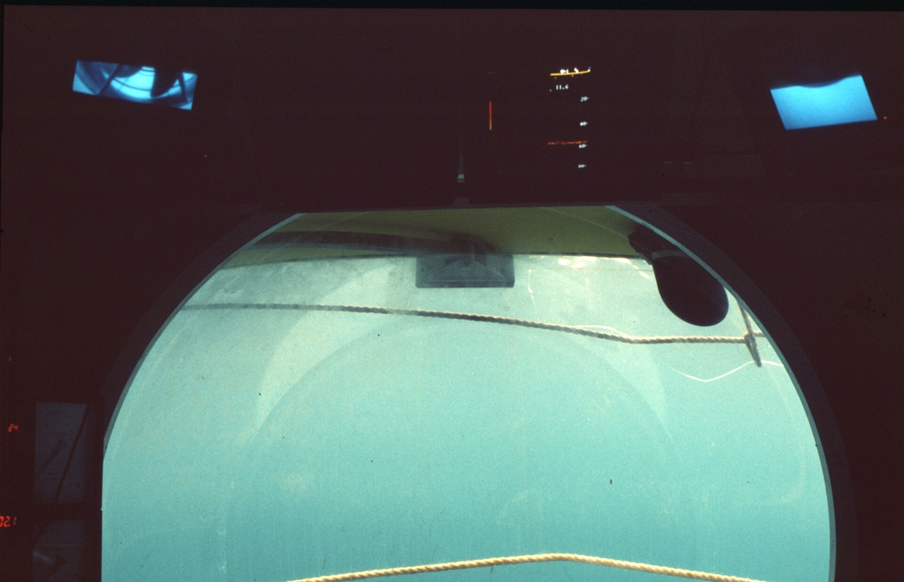
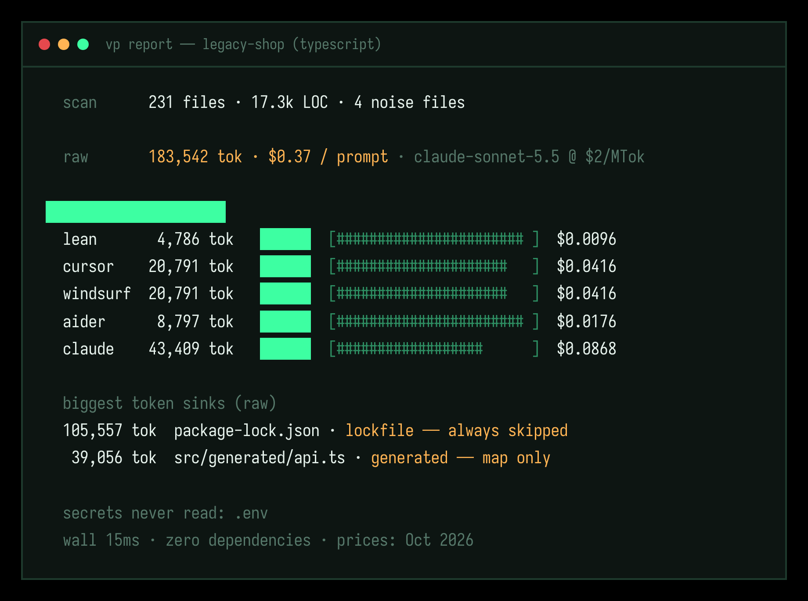

Every prompt re-ships your repo to a model that bills by the token. vibe-pilot prunes it to a ranked .context file first, for a −88.7% receipt you can read in 15 ms.
scan 231 files · 17.3k LOC raw 183,542 tok · $0.37 / prompt profile projections lean 4,786 tok -97.4% cursor 20,791 tok -88.7% claude 43,409 tok -76.3% 105,557 tok package-lock.json - skipped secrets never read: .env wall 15ms · zero dependencies
The lockfile never fixed a bug. vibe-pilot prices your prompt, then flies the model a lean, ranked cut.
The tax. A single package-lock.json is 100k+ tokens. Generated API clients, vendor trees, dead boilerplate: pasted into every prompt, billed on every request, and quietly pushing your codebase out of the context window until the model forgets it exists.
The cut. Six profiles from an 8k skeleton to the full window. Lockfiles, generated code and binaries never make it in. Comments survive unless you say otherwise, and secrets are never read. Not one byte.
The receipt. Before anything is written, vp prints the bill: raw tokens, cost per prompt on current model pricing, per-profile projections, and every skip with its reason. No guessing what the context costs.
The agent. vp runs as an MCP server, so Claude Code and Cursor call it themselves: vp_context before a big change, vp_diff between prompts. The context stays lean without you thinking about it.
No such command, but there are only six. That's the point.
Files you touched this week outrank files you forgot in 2023. Task terms, git recency, import centrality and entry-point proximity. A public, boring formula, not magic.
Lockfiles and generated code are counted, priced, and skipped. Boilerplate comments collapse. Oversized files truncate with a visible marker. Nothing changes meaning.
One markdown file: the receipt, a scored map of every file in the repo, and the bodies of the winners. The agent can ask for anything on the map by path.
## map - `src/auth/session.ts` · source · 81 tok score 4.8 · task: session, refresh - `src/index.ts` · source · 50 tok · score 3.2 - `CLAUDE.md` · rules · 18 tok · score 3.2 - `src/lib/cart37.ts` · source · 189 tok - `src/lib/cart38.ts` · source · 189 tok - `tests/cart12.test.ts` · test · 96 tok ... 224 more files, each with a score score = 3.0·task + 2.0·recency + 1.5·imports + 1.0·proximity ## map (the cuts are priced) - `src/auth/session.ts` · 81 tok · included - `package-lock.json` · 105,557 tok lockfile - always skipped - `src/generated/api.ts` · 39,056 tok generated - map only - `.env` · secret - never read ## files - src/auth/session.ts // session handling - kept: doc comments export function refresh(s: Session) { // inlined cache check return rotate(s.token); } comments stripped only in --lean ## stats | files | 102 of 232 (44%) | | tokens | 20,807 (raw 227,736 · -90.9%) | cost/prompt| $0.0416 · was $0.4555 ## map - every file, with its score ask for any of them by path $ claude mcp add vibe-pilot -- vp mcp ok - agent now calls vp_context itself

Aviation had a word for this. When analog gauges gave way to six essential displays, they called it the glass cockpit: fewer instruments, better flying. Your context window wants the same thing.
Mobilis submarine cockpit · Andreas059 · CC0, via Wikimedia Commons
kept every month: the part of your bill that was lockfile, boilerplate and dead weight.
per prompt: $0.366 → $0.041
per month before: $445 · after: $50
| legacy-shop fixture · 231 files · reproducible via make bench | tokens | cut | cost / prompt | saved / month* |
|---|---|---|---|---|
| raw paste | 183,542 | - | $0.3671 | - |
| lean profile | 4,786 | −97.4% | $0.0096 | $433 |
| aider profile | 8,797 | −95.2% | $0.0176 | $425 |
| cursor profile | 20,791 | −88.7% | $0.0416 | $394 |
| claude profile | 43,409 | −76.3% | $0.0868 | $340 |
*40 prompts/day, Sonnet 5.5 input pricing, Oct 2026. Every number is real: clone the repo and run make bench. The fixture generator is 90 lines of bash.

No. vibe-pilot is a local binary with zero network code and zero dependencies. It reads files, writes one .context file, and prints numbers. There is no telemetry, no account, no server. The whole binary is small enough to read in an afternoon.
Code tokenizes at roughly 3.7 characters per token across current GPT and Claude tokenizers, measured within about 10% of tiktoken on real codebases. The report is a receipt, not an invoice, and --price lets you plug in exact rates when prices move.
They stack. Caching discounts repeated input; vibe-pilot shrinks the input before it's ever sent. A cached 183k-token prefix still costs ~$0.037 per request on Sonnet 5.5; the cursor-profile context costs less than that on its first request, and it caches for less too.
Packers pack; vibe-pilot prunes. .gitignore can't rank files by what you're building, strip boilerplate, or tell you what anything costs. Packers concatenate whatever isn't ignored. vibe-pilot scores every file (task, git recency, imports), enforces a token budget, and hands you an itemized receipt, then keeps every excluded file visible in the map so nothing is hidden.
Anything that can read a file: Claude Code, Cursor, Windsurf, Aider, Codex CLI, or a raw curl. For Claude Code and Cursor there's MCP: claude mcp add vibe-pilot -- vp mcp. Your agent calls vp_prune, vp_context and vp_diff itself.
It will never read a secret. .env, keys, certificates are detected by name and skipped before a byte touches memory. It will never delete or modify your files; it writes exactly one new file. And it will never change the meaning of your code: comment stripping is full-line only, lint directives survive, and the test suite enforces it.
$ cargo install vibe-pilot
$ vp report
then read your bill
zero dependencies, so it compiles in seconds · macOS, Linux, Windows · MIT